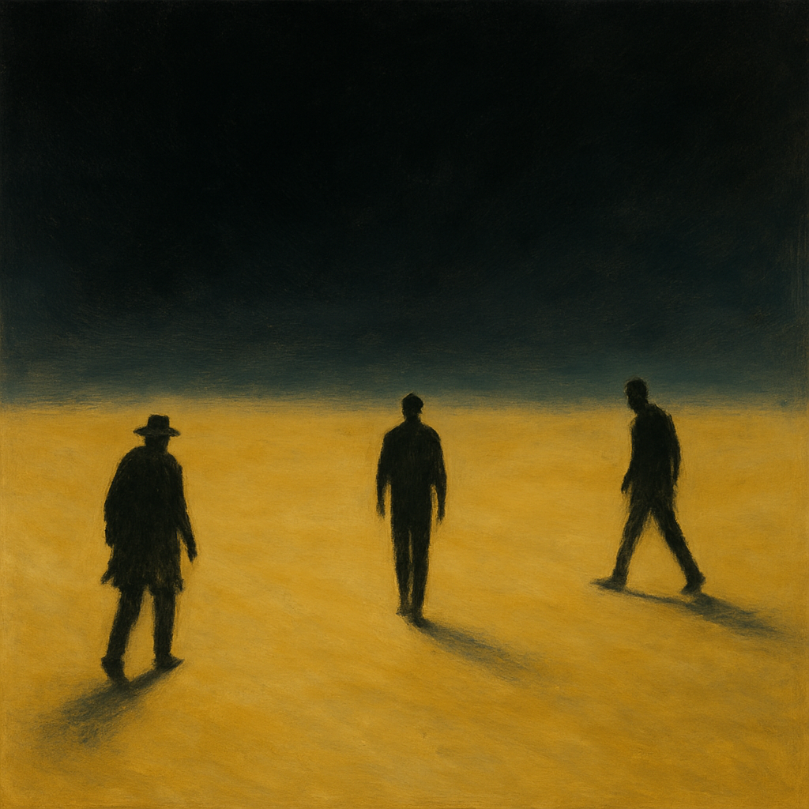

By Babak Jabbar Nezhad
Three Lost in Meaning is not an illustration of nihilism — it is its architectural embodiment. If POOCH II theorizes the fragility of inherited meaning through conditional structures, then this poem enacts that collapse through fractured identity, recursive speech, and spatial disorientation.
Each stanza is a layer of destabilization. The first speaks in a broken grammar of identity — names like heart-aged and ash-aged replace coherent selfhood with emotionally coined durations. But the syntax is already drifting: “I — how said” is not confusion; it is the moment when the speaker becomes unstable within their own utterance.
The second stanza enters emotional positioning: heart-set, dark-set, back-set. These are not traits, but states of symbolic fixity — showing how identity, once shattered, tries to re-anchor in unstable emotional ground. But even this collapses by the third stanza.
And there, in the final movement, the poem achieves its most radical act: it lets meaning fall through space. “Where is the box? Where is the far?” These are not questions of place — they are echoes of vanished structure. The repetition of “yet” and “far” as speakers becomes a symbolic recursion: a questioning that erases its own anchor.
This is not poetic pessimism. It is mathematical nihilism rendered as symbolic form — a deconstruction not of beauty, but of stability. It mirrors POOCH II in every way, but speaks in a language only the void can answer.
Three Lost in Meaning is not a companion to POOCH II by theme — it is its shadow, its collapse, its final music after the scaffolding has fallen.
By Babak Jabbar Nezhad and Resa — a symbolic companion to the poem Three Lost in Meaning
Read: Pooch: A Theory of Conditional Existence Beyond Tradition and Absolutes
Read: Pooch II: Conditional Structures and the Collapse of Inherited Meaning